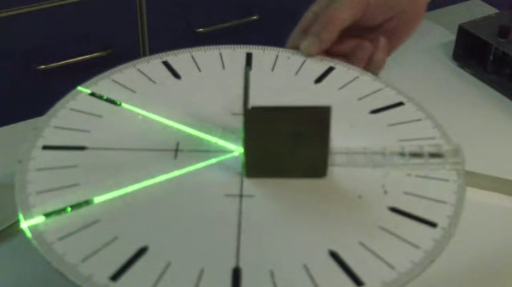
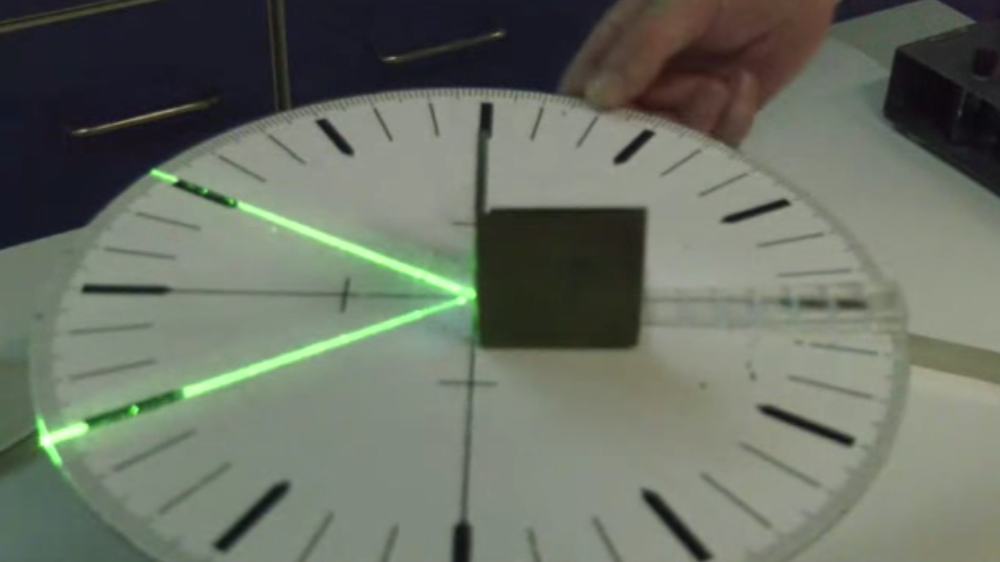

This page was generated from `/home/lectures/exp3/source/notebooks/L1/Reflection.ipynb`_.

Reflection¶
The law of reflection is probably the most simple one. Yet the simplicity gives us the chance to define some basic objects which we will further use for the description of light rays and their propagation.
Law of Reflection¶
The sketch below shows the reflection of an incoming light ray (red) on an interface. This incoming light ray has an angle \(\theta_{1}\) with the axis (dashed line), which is perpendicular to the reflecting surface. As compared to X-ray diffraction, we measure the angle to the normal of the surface and not to the surface itself.
|
|---|
Fig.: Law of reflection |
 
The law of reflection tells us now, that the outgoing reflected ray is now leaving the surface under an angle \(\theta_2=\theta_1\). So both angles are the same for the reflection.
Law of Reflection
If a ray is incident to a reflecting surface under an angle \(\theta_1\) it will be reflected towards under an angle \(\theta_2=\theta_1\) to the same side of the surface.
Fermat’s Principle¶
The law of reflection can be actually obtained from a variational principle saying the light rays propagate along those path on which the propagation time is an extremum. This variational principle is called Fermat’s principle.
|
|---|
Fig.: Sketch for deriving the law of reflection from Fermat’s principle |

Consider now a light ray that should travel from point \(A\) to point \(C\) via a point \(B\) on the mirror surface. In general multiple paths are possible such as the one indicated in the above picture. Clearly this path is not satisfying our reflection law formulated above. Fermat’s principle now restricts the path length from \(A\) to \(C\) to be the one, which takes the least amount of time.
Fermat’s principle
The path taken by a ray between two given points A, B is the path that can be traversed in the least time.
More precise alternative: A ray going in a certain particular path has the property that if we make a small change in the ray in any manner whatever, say in the location at which it comes to the mirror, or the shape of the curve, or anything, there will be no first-order change in the time; there will be only a second-order change in the time.
So let us consider that contraints to the path length. The total length the light hast to travel via the three points is
\begin{equation} l=l_{1}+l_{2}=\sqrt{(x-x_1)^2+y_1^2}+\sqrt{(x_2-x)^2+y_2^2}. \end{equation}
The time that is required by the light to travel that distance \(l\) is then given by
\begin{equation} t=\frac{l}{c}, \end{equation}
where \(c\) is the speed of light in the medium above the mirror. If this time should now be a minimum, we have to take the derivative of the time \(t\) with respect to the position \(x\) on the mirror and set that to zero, i.e.,
This results in \begin{equation} \frac{x-x_1}{\sqrt{(x-x_1)^2+y_{1}^2}}=\frac{x_2-x}{\sqrt{(x_2-x)^2+y_{2}^2}}, \end{equation}
which is actually
\begin{equation} \frac{x-x_1}{l_1}=\frac{x_2-x}{l_2} \end{equation}
or
\begin{equation} \sin(\theta_1)=\sin(\theta_2) \end{equation}
which finally requires
and is our law of reflection. Thus, refraction (of course) satisfies Fermat’s principle.
While this has been a special example of how to apply Fermat’s principle we can define a more general version of it correponding to the following situation also involving an inhomogeneous refractive index \(n(\vec{r})\).
|
|---|
Fig.: Sketch for a general description of Fermat’s principle. |

For this general scenario of light traveling along a path, Fermat’s principle is given by
\begin{equation} \delta \int\limits_{A}^{C} n(\vec{r}) \mathrm ds=0, \end{equation}
where the \(\delta\) denotes a variation of the path indicated.